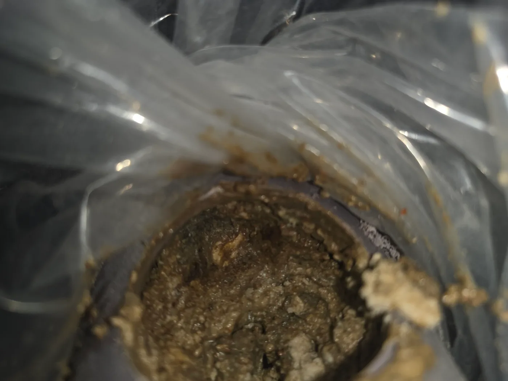
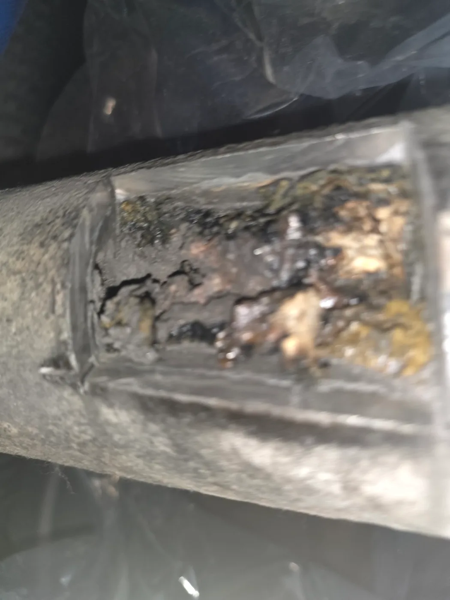

이천시 장호원읍 하수구막힘, 현장 도착 후 진단
이천시 장호원읍 하수구막힘 요청을 접수한 신라건축설비는 PVC 배관과 주철배관 작업에 필요한 타공 장비와 리지드 샤프트를 준비해 현장으로 출동했습니다. 숙련된 하수구막힘 전문 기술자가 배수 증상과 연결 배관의 구조를 점검한 결과, 한 종류의 배관만 막힌 것이 아니라 서로 연결된 PVC 배관과 주철배관에 오염물이 광범위하게 축적된 상황이었습니다. 기존 배수구에서 장비만 반복적으로 밀어 넣으면 정확한 막힘 상태를 확인하기 어려워, 배관 재질과 위치에 맞춰 각각 작업구를 확보하기로 했습니다.
1단계: 증상 확인과 필요한 장비 작업
먼저 PVC 배관의 막힘이 집중된 위치를 선정한 뒤 홀쏘를 사용해 원형 작업구를 만들었습니다. 타공구를 통해 내부를 확인하자 걸쭉하게 굳은 기름성 이물질과 슬러지가 배관 안쪽을 가득 채우고 있었습니다. 단순히 배관 벽면에 오염물이 조금 붙은 정도가 아니라 물이 통과할 수 있는 공간 자체가 크게 줄어든 상태였습니다.
이어 연결된 주철배관의 상태를 확인하기 위해 작업 가능한 위치를 사각형으로 타공했습니다. 주철관 내부에도 검게 굳은 기름때와 오염물이 두껍게 쌓여 있었습니다. 재질이 다른 두 배관의 상태를 각각 직접 확인하면서 막힘 범위와 샤프트 진입 방향을 설정했습니다.

2단계: 원인 구간 처리와 정상 작동 확인
PVC 배관과 주철배관에 확보한 작업구를 통해 리지드 플렉스샤프트를 투입했습니다. 배관 재질과 내부 저항에 맞춰 회전 속도와 진입 깊이를 조절하며 굳은 기름 덩어리와 슬러지를 구간별로 분쇄했습니다. 중앙에 작은 물길만 만드는 단순 관통에 그치지 않고, 배관 벽면에 붙은 오염층을 제거해 내부 단면을 넓히는 배관스케일링 방식으로 작업했습니다.
떨어져 나온 기름때와 이물질을 밖으로 회수하고 PVC 배관과 주철배관의 연결 구간까지 반복적으로 정리했습니다. 이후 각 작업구와 배수시설에서 충분한 양의 물을 흘려보내 구간별 배수 속도와 역류 여부를 확인했습니다. 정상적인 통수 상태를 확인한 후 타공 부위를 배관 재질에 맞게 보수하고 작업을 마무리했습니다.

작업 결과와 재발 방지 안내
PVC 배관과 주철배관을 각각 타공하고 리지드 샤프트 작업을 진행한 결과, 내부를 가득 막고 있던 기름때와 슬러지가 제거되어 정체됐던 물이 정상적으로 배출됐습니다. 특히 주철배관은 내부 표면의 부식과 거친 부분에 기름 성분이 쉽게 달라붙을 수 있으며, PVC 배관도 많은 양의 기름성 오염물이 반복적으로 유입되면 내부 공간이 빠르게 좁아질 수 있습니다.
여러 배수구에서 동시에 물 빠짐이 느려지거나 반복적으로 하수구막힘이 발생한다면 입구 한 곳만 뚫는 것으로 끝내지 말고, 재질이 다른 연결 배관과 구간별 내부 상태까지 확인해야 합니다.
신라건축설비는 이천시 장호원읍을 비롯한 경기 전 지역과 서울 전 지역에 출동하여 하수구막힘·공용배관막힘·오수관막힘을 전문적으로 해결합니다. PVC 배관과 주철배관의 구조 및 막힘 상태에 따라 내시경검사, 석션, 관통, 리지드 샤프트 배관스케일링, 고압세척과 배관 타공작업을 복합적으로 적용합니다. 단순한 생활 막힘부터 오래된 배관의 보수·교체 및 대형 배관공사까지 자체적으로 대응합니다.
최종 조치: 막힘이 집중된 PVC 배관은 홀쏘를 이용해 원형으로 타공하고, 주철배관은 작업에 필요한 부분을 사각형으로 개방했습니다. 각 작업구를 통해 배관 내부 상태를 확인한 뒤 리지드 플렉스샤프트로 기름때와 슬러지를 분쇄·제거했습니다. 구간별 통수검사 후 타공 부위를 안전하게 보수했습니다.
현장 방문 전 확인하는 비용과 작업 범위
신라건축설비는 현장 증상과 배관 구조를 확인한 뒤 필요한 작업과 예상 비용을 안내합니다. 단순 관통으로 해결되는지, 배관내시경·석션·고압세척 또는 추가 장비가 필요한지는 현장 상태에 따라 달라집니다. 출장비와 야간 작업비, 추가 장비 비용이 발생할 수 있는 경우 작업 전에 먼저 설명하고 동의를 받은 범위에서 진행합니다.
업체를 선택할 때 확인할 사항
무조건적인 ‘0원’ 표현보다 실제 작업 범위, 추가 비용 조건, 사용 장비와 사후 대응 기준을 확인하는 것이 중요합니다. 해결되지 않았을 때의 비용 기준과 작업 후 동일 증상 발생 시 점검 범위를 사전에 문의해두면 불필요한 분쟁을 줄일 수 있습니다.
이천시 하수구막힘 자주 묻는 질문
여러 배수구가 동시에 역류하면 공용배관 문제인가요?
배수시설에서 사용한 물이 원활하게 빠지지 않고 정체되는 증상이 나타났습니다. 기존 배수구에서 진행하는 단순 관통만으로는 해결하기 어려웠으며, 연결된 PVC 배관과 주철배관 내부를 구간별로 직접 확인해야 하는 상태였습니다.처럼 증상이 나타나더라도 원인은 현장마다 다를 수 있습니다. 장비와 배관 구조를 확인한 뒤 필요한 작업 범위를 안내합니다.
고압세척이 항상 필요한가요?
작업 전 증상과 현장 여건을 확인해 예상 범위와 비용을 먼저 안내합니다. 변기 탈거, 장비 추가 투입 또는 공용배관 작업이 필요한 경우 고객 동의 없이 임의로 진행하지 않습니다.
작업 전 추가 비용을 확인할 수 있나요?
완료 후 정상 작동을 함께 확인하고 작업 범위에 따른 사후 안내를 드립니다. 동일 증상이 반복되면 현장 기록을 기준으로 원인을 다시 점검합니다.
하수구막힘 서울·경기 출동지역
신라건축설비는 이천시 장호원읍 현장을 포함해 서울 25개 구와 경기도 31개 시·군의 배관 문제를 상담합니다. 현장 거리와 기사 배정 상황에 따라 출동 가능 여부를 먼저 안내드립니다.
서울 전 지역
강남구 · 강동구 · 강북구 · 강서구 · 관악구 · 광진구 · 구로구 · 금천구 · 노원구 · 도봉구 · 동대문구 · 동작구 · 마포구 · 서대문구 · 서초구 · 성동구 · 성북구 · 송파구 · 양천구 · 영등포구 · 용산구 · 은평구 · 종로구 · 중구 · 중랑구
경기도 주요 출동지역
수원시 · 용인시 · 고양시 · 화성시 · 성남시 · 부천시 · 남양주시 · 안산시 · 평택시 · 안양시 · 시흥시 · 파주시 · 김포시 · 의정부시 · 광주시 · 하남시 · 광명시 · 군포시 · 양주시 · 오산시 · 이천시 · 안성시 · 구리시 · 의왕시 · 포천시 · 양평군 · 여주시 · 동두천시 · 과천시 · 가평군 · 연천군